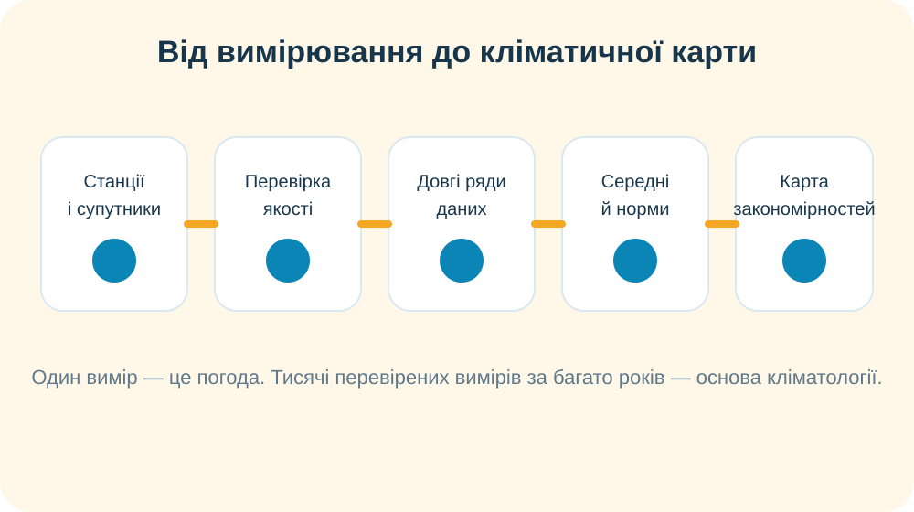

Багаторічний режим погоди, характерний для певної місцевості. Його описують не одним днем, а статистикою за тривалий період.
1. Погода чи клімат?

Ситуація: у місті сьогодні +31 °C, хоча середина вересня. Учень стверджує: «Отже, клімат міста тропічний».
2. Лабораторія: від ряду погоди до клімату
Перемикайте три умовні станції. Це навчальні багаторічні профілі: важлива не назва міста, а закономірність.
Завдання: визначте, яка станція має найменшу річну амплітуду температури, яка — найбільшу, а де опади розподілені найрівномірніше. Наведіть числа з графіка як докази.
3. Що насправді показує кліматична карта?
- Прочитайте назву карти.
- Знайдіть показник у легенді та одиниці вимірювання.
- Визначте просторову закономірність.
- Лише потім пояснюйте причину.
Що перевіряємо перед тим, як порівнювати два кольори на карті?
4. Реальні кліматичні дані
Copernicus ERA Explorer
Інтерактивний глобус на основі ERA5 дає змогу порівнювати багаторічні середні температури й опади та дивитися сезонний хід.
Відкрити Copernicus →Український гідрометцентр
Порівняйте кліматичні характеристики місяця для України з поточним прогнозом. Це хороший спосіб побачити різницю між нормою і конкретним роком.
Відкрити УкрГМЦ →Пастка. Windy показує переважно поточний стан/прогноз. Чому цю карту не можна автоматично назвати кліматичною? Який часовий масштаб має бути в даних, щоб робити кліматичні висновки?
5. Світ із космосу: спостереження ≠ кліматична норма

Доказове завдання. Уявіть, що на цьому кадрі над Україною немає хмар. Чи можна довести ним, що клімат України сухий? Сформулюйте мінімум два заперечення.
6. Як працюють метеорологи й кліматологи?

Розташуйте етапи у правильному порядку:
Коротке відео NASA: випишіть одну відмінність між погодою і кліматом та один тип даних, який використовують дослідники.
7. Теорія після дослідження
Тематична карта, що показує просторовий розподіл кліматичних показників: середніх температур, опадів та інших характеристик.
Стандартне багаторічне середнє, з яким порівнюють конкретні місяці та роки. У сучасній практиці часто використовують 30-річні періоди.
Важливо: карта температурних аномалій показує відхилення від базового середнього, а не абсолютну температуру. Не плутайте ці два типи карт.
8. CER: чи можна назвати місце «вологим» за одним дощовим тижнем?
9. Домашнє завдання
§33. Оберіть два міста України. За кліматичною картою/надійним кліматичним сервісом порівняйте середню температуру найтеплішого й найхолоднішого місяців та річну кількість опадів. Напишіть 3 речення: що відрізняється → який доказ → можливе пояснення.
Електронний підручник ВШО →10. Підсумковий тест — 10 балів
Тест відкриється після заповнення всіх полів.